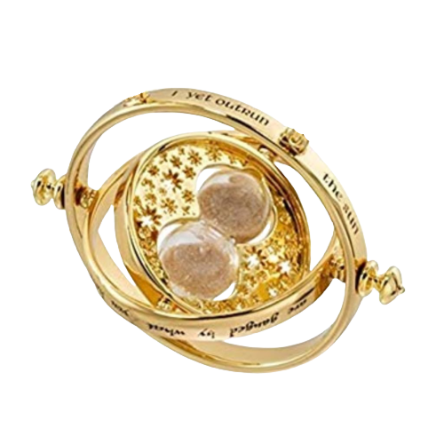
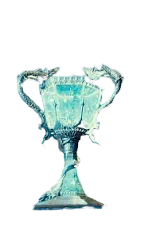
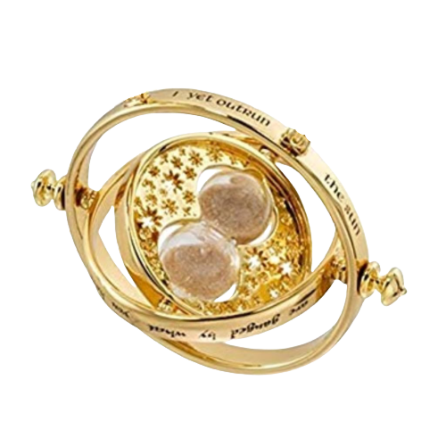
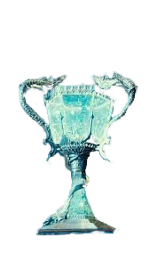

Harry Potter é não é mais uma criança, sua força e coragem serão testados nesta aventura O Cálice de fogo, um disputa entre escolas, que o colocarão frente a frente com desafios mortais com dragões e até mesmo aquele que não pode ser mencionado " Voldemort ". Nosso bruxinho querido irá nos surpreender mais uma vez com suas mágias e sua lealdade aos seus amigos e professores.
| Livro | Filme | ||
|---|---|---|---|
| Título Original | Harry Potter and the Goblet of Fire | Título Original | Harry Potter and the Goblet of Fire |
| Publicação | 1999 | Lançamento | 2004 |
| Editora | Bloombury Publishing | Ditribuição | Warner Bros. Pictures |
| Autora | Joanne Rowling | Diretor | Mike Newell |
| Ilustrador | Mary GrandPré | Roteiristas | Joanne Rowling Steve Kloves |
| Linha Temporal | 1994-1995 | Produtor | David Heyman |
| Nº de Págnas | 636 | Duração | 157 minutos |
| Gênero | Fantasia, ficção, aventura e bildungsroman | Gênero | Aventura, Fantasia, Família |
| País | Reino Unido | País de Origem | Estados Unidos da América Reino Unido da Grã-Betanha Irlanda do Norte |
 


